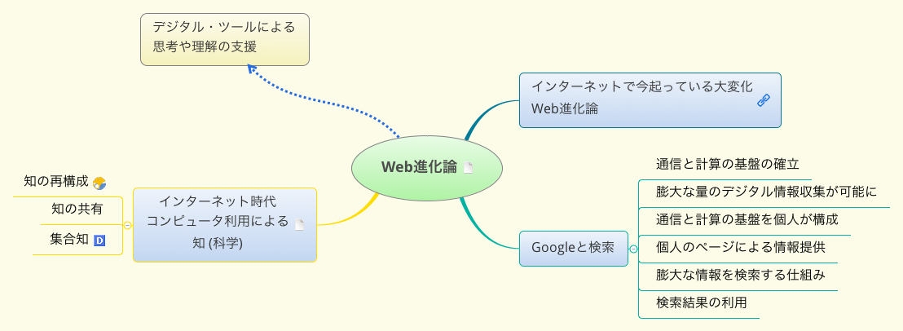

クラウドと情報リテラシー
この文書について
この文書はデジタル文書なので，できればブラウザを使って読んでほしいです。
この文書は二つの見え方を持ちます:
Emacs Org-mode 形式 (アウトライン形式)
https://github.com/masayuki054/cloud_and_information_literacy/blob/master/org/talk.org です。
HTML
https://masayuki054.github.io/cloud_and_information_literacy/talk.html
この文書は，Emacs というテキスト・エディタ・アプリで，Org-mode とい うアウトライン形式で書かれています。
文書は，自分のパソコンで作成し，Github リポジトリ
https://github.com/masayuki054/cloud_and_information_literacy
で公開しています。
講師について
自己紹介.org を読んでください。
まえがき
情報, そしてその理解や知識化って，何ですか？
- 言葉，項目を目にして，思い出すことがら
- 意味 what
- 最小限の登場人物 - 分化
- それらの間の関係
- 方法 how
- 最小限の登場人物
- それらの間の関係をどう築くか
- 理由 why
- 外の関連項目との関係
- 意味 what
- 思い出す関連項目
- 上位のこと(概念)
- 下位のこと(概念)
- 似ているもの
- 反対のもの
自分が得た理解や知識，情報をどう残し保存していますか？
- 頭の中に。なにかのキーワードをきっかけに思いだす(かもしれない)
- 自分が書いたメモや文章を，分類してとっておく
- 検索できるようにしたいなぁ
コンピュータとインターネットを利用していますか？
コンピュータとインターネットは，自分が理解するために役立ちますか？ 自分の知識を保存するために役立ちますか？
本講義では，コンピュータとインターネットを使って，人の知的活動を支 援する考え方やアプリケーションをデジタルツールと呼んでいます。
現在，Webの進化は，共同知を生み出しているのだと思います。

([[./x_maps/04-Web進化論.xmind][XMindファイルのダウンロードはこちら])
共同知は，検索できる知識の集まり。デジタルツールを通して，検索しその存 在を知り，読み書きします。デジタルツールは人が考える助けをしてくれもし ます。
クラウド・コンピューティングは，いろいろな場所から，様々な機器を使って， 同じアプリで，情報も理解も知識を取得・生成・保存できることを目指してい ます。
「ネット社会は，Webによる情報共有とクラウド・コンピューティングの推進に 合意している」と講師 (以後，s-:) は考えています。
その本質はどこにあって，我々はそれとどうつきあっていくのか， その理解が情報リテラシーだと思います。
インターネット社会のトレンド
最新ITトレンド図解本の図を眺めながら，ネット社会のトレンドについて 考えてみましょう。
- クラウド・コンピューティング
- モバイルとウエアラブル
- ITインフラ
- IoTとビッグデータ
- スマートマシン

講義の目的
情報化社会の現状について自分なりの理解を作ること
クラウドとは何か
情報リテラシのためのデジタルツールの利用
- ブラウザ
- テキストエディタ
- アウトライナー
- マッピングアプリ
- 情報リララシの技術
- 情報の取得
- 情報の理解，知識化
- 情報の共有
- 情報の発信
- Googleのクラウド・サービスとは
- Googleの使命
- Google検索の仕組み
- Google G Suite
- Google Policy と規約
授業内容
放送大学のインターネット環境を体験的に概観します。
膨大な情報と過剰なサービスが存在するウェブ、さまざまな情報機器から 利用できるクラウドとは何か、体験的に学びます。
多くの情報の中から、自分の情報を確立させる技術が情報リテラシーです。 情報リテラシーを高めるための考え方と技術を、体験的に学びます。
講義の前半で、メモと思考のためのツールを紹介します。講義内容をメモ し、考えながら受講してください。
講義の目的
いろいろ検討した結果が以下です:
情報と知的思考とメモについて考えます。
- 情報リテラシーのためのICTリテラシーを確認する
- 情報を理解することについて考え，そのための技術を考える
- 情報をまとめることについて考え，そのための技術について考える
- 情報処理の過程について考え，知的情報処理の技術について考える
- 知的情報処理のための(デジタル)技術の活用について考え，技術を習得する
ここでは，メモという言葉を，たくさんの思考(過程)の記録の集りという イメージで使っています。
講義の概要
やり方
講義を通して，いろいろな考え方を紹介し，私の理解を説明します。 一緒に考え，自分の考えをメモにまとめてください。
自分流でかまいません，できれば，章ごとに一枚の紙を使って， マインドマップ形式のメモを描いてほしいです。
最初は紙と色鉛筆で手描きで，なれてくれば XMind/ZEN を使ってみま しょう。
- 講師のXMindマップをダウンロードして，それに追加や編集を加えるの も推奨します。
アウトライナーを使うのもお勧めです。後で，Web アプリの Dynalist について紹介します。
講師のテキストをコピペして，構造化して，自分のメモを作成する方法 はお勧めです。
講義の最後に，自分の講義メモを振り返り，見直し・修正し，自分の意見・ 感想を書いて，レポートとして提出してください。
講義内容一覧のマップです。ダウンロードしてメモに使ってください:
受講の準備
USB で持ち運ぶ アプリ
- Google Chrome Portable
- XMind/ZEN
Chrome の使い方
Google ドライブを使ってみよう
自分の マイドライブ (https://drive.google.com/drive/my-drive) に
- クラウドと情報リテラシ」という名前のフォルダを新規作成
- そのフォルダの共有設定する
- フォルダを右クリックして，メニューから，「共有」を選ぶ
- 講師 (msyk054@gmail.com) aを招待してください
このフォルダをレポート提出に使います。
Mindmup2 を使ってみよう
下記のページを読んで，使ってみましょう。
XMind/ZEN の使い方
下記のページを読んで，使ってみましょう。
アウトライナー (Dynalist)を使ってみよう
放送大学のインターネット環境を体験的に概観します。
放送大学ネットワーク
- 頭の中に，ICT環境の絵が描けるようになりましょう。
Googleサービスの利用
G Suite
Google アカウント
- メールのために，G Suite を使っているんですね。
- 学生番号@campus.ouj.ac.jpがグーグル・アカウント
- 自然と，Google の他の機能が使える。
- Google の使い方のために，下記サイトを見てみましょう：
- 自分のグーグルアカウントを確かめましょう。 講師のアカウントは，spct03a@campus.ouj.ac.jp です。
Google Driveを使ってみましょう。
- 講師の用意した，Google Driveのフォルダーを使ってみましょう。
- スマホでGoogleDriveを使ってみましょう。
- iPhoneの人は GoogleDrive アプリをダウンロードしてみてください。
- 講師へメール，ドライブの利用など
ここまでで，うまくいけば，Googleを通して，講師と共同作業することが 可能になったはずです。
メモと思考と情報処理
思考とは (:-s)
./i_maps/メモと思考について考えたこと_imap.pdf を見てください。
考えて，理解し，覚えること
- (考える) 関連項目を集めて，
- (考える) 項目関係を把握し，
- (理解する) 項目と関係を，構造化する
- (納得する) 既存の知識と融合する
- (覚える) 時間が経っても，知識の欠片を切っ掛けに，思い出せ，説明できる
- 幾つかのキーワードを切っ掛けに全体が思いだせる
考えるための項目，考えたプロセス，考えてできた項目間の関係， 理解した構造，覚える
メモとは (:-s)
(マップのダウンロード) (手書きマップ)
メモは，思考や記憶の記録であり，思考や記憶の過程の記録であり， 記憶の補足・補完・補間である。思考や記憶を外化するものである。
後で読んで理解しやすい，思考過程や記憶がよみがえる，などのことが のぞまれる。
情報とは (:-s)
自分の外にあるデータ，意味付けして，自分の情報として取り込む
自分の中にある理解や知識，意味付けして外化して，自分を含めた， 客観的な情報となる。
思考の基本
原理
抽象化 を見てください。
- 2つの項目を一緒に並べ，
- 2つの項目の間にある関係を認識し，
- 2つの項目のその関係を一纏めにし，
- 全体に名前を付る
思考とメモ
- 理解し，メモにまとめること
- メモから，発想すること
- 思考はプロセス
知的思考の技術とメモの必要性
- 思考過程の枠化と順化，
- 思考対象と思考過程の記録がメモ
- 思考結果の記録と外化もメモ
- 思考し続けるための構造化されたメモが必要
情報処理と思考過程の類似
(s-:) 知的な情報処理やりかたが，情報リテラシーと考えます。
デジタルツールによる思考の支援
デジタルツールは，インターネットとコンピュータを前提にした文書の読 み書きそろばんをおこなうためのツール。文書というよりは，情報と言っ たほうがいいかもしれません。
 を見てください。
を見てください。
言葉の説明は，WebとWeb上のデジタル文書技術 を読んでください。
- Web文書間の構造 ハイパーリンク
- ハイパーテキストでWeb文書がアプリにもなる
- 文書の体裁を整えるマークアップ
- 文書の構造を記述する アウトライン
- 知識の表現 マインドマップ
思考のためのデジタルツール
- 文書の構造 (アウトライン) を記述し，編集し，概観するためのアプリ が，アウトライナー
- 知識の表現 (マインドマップ) を記述し，編集し，概観するためのアプ リ.
マインドマップとは，その使い方

アウトライナーとは，使い方
アウトライナーであらすじを捉える。
- ./docs/outline.html に講師の考えが書いてあります。
思考の方法
ここでは，思考する方法について，考えてみます。
理解したことを，アウトライナーかマインドマップにメモしましょう。 アプリを使わず手書きでもかまいません。 レポート提出の一部になります。
はじまり: 図で考える，シンプルになる
僕が『図で考える。シンプルになる。』を書いた理由 | ビジュアルシンキ ング 櫻田潤, 2017年10月11日
7つの図の使い方を学び，図の使い方の演習をおこいます。
この演習を通して，考えることや，考えたことを，図で表わすことの意味を 実感してください。
抽象化と分解 (再度)
抽象化とその逆の分解が思考の原理 だと思います。
図で考えるときも，アウトラインでも，マインドマップでも，その考え方 や操作の中に，抽象化と分解が表われていると思います。考えて，考えた ことをメモしてください。
論理的思考
So what, Why So, MCME などが，最近のビジネス書にでているようです。
計算論的思考
- 論文のまとめ.org
- Computational Thinkingとは何か - 小さなごちそう わかりやすい解説です。
計算論的思考は，情報処理的に考えることとその評価基準です。コンピュー タ科学分野での思考法ですが，対象をコンピュータだけでなく，人やシス テムを含めて考え，子供のときから身につけるべき考え方であるといわれ ています。
批判的思考 (ここ大切です)
入ってくる情報を鵜呑みにせず，咀嚼して自分の知識や理解とする態度と 思考方法について書かれています。
批判的思考について.org で説明します。
講師のまとめと感想が後半にありますので，参考にして，自分の考えをメモと して纏めてください。
GTD – (思考を) 続けるためのメモの技術
GTD関連のメモ を概観してみてください。
./i_maps/僕にとってのGTD_imap.pdfに，継続して思考を続けていくため のメモの技術として捉え
- やらなければならない事が沢山あるときに，
- それらをこなしつつ，
- 心が安定した状態を長く保つためのメモの技術
- 関心項目を書き出す，
- 関連する項目をすべて洗い出し，
- 項目間の依存関係で構造化し，
- 全てを書き出し，一旦忘れる
- 適当な項目を選び，行なう
トップダウンに考えて， ボトムアップに実行していく，方法。
ソフトウェア開発手法，
大きな目標に向って，ボトムアップに考え，すこしづつ実行していく方法
- スパイラル開発モデル
- 要求
- 設計
- 開発
- テスト
- テスト駆動開発
- 大きな要求を細かな要求に分割し，
- 要求をテストで書き，
- テストに通る最小の開発をおこなう
- 細かな要求の実現を重ねて， おおきな要求を実現する
- 大きな要求を細かな要求に分割し，
発想法
「なにか新しいことを思いつく」ことについて考えてみましょう。
アイディアの作り方
アイデアの作り方は著名な本です。下記にまとめがあります。 ざっと目を通し，発想することについて自分でまとめてみましょう。
次のマップは，講師の読書ノートをマップ化したものです:

水平思考 - Wikipedia
水平思考.org まとめです。
- 深かく思考する垂直思考に対して
- 思考に広がりをもたせる
KJ法
下記サイトを概観してみましょう。
まとめると，
- 思いつくまま，関連情報をカードに書きだし，
- 関連するものをグループ化し，
- グループに見出しをつける。
- グループに対して，同じグループ化を行い，グループ化できなくなるま で，繰り返す。
- グループ間の関係について考える
- グループとグループ間の関係を説明する文章を書く
マインドマップ
放射思考 (Mindmap) です。
発想法として，マインドマップを使うことについて，考えてみてください。
知的思考のための7つのステップ
知的思考の技術―考えるフレームを強化する7つのステップの思考術
知的思考の技術勉強_imap.pdf は講師の読書ノート (手書マインドマップ)です。
下記は，本の各章のまとめを，さらに簡潔に記述し直したものです。
目的探索の思考
- 考え方のポイント
- 思考や行動の目的を明らかにするために、
- 何かを始めるときには自分自身に対して「そもそも何のために？」とい う問いかけを行うことが大切である。
- 陥りやすい失敗
- そもそも目的を考えていない。
- 目的は考えてはいるが妥当性が低い。
- かつては高かった目的の妥当性がいつしか失われてしまった。
主なツール
- 状況の構造化図
- 目的の連鎖
観察の思考
- 考え方のポイント
- 心理的要因や発信者の意図に惑わされない。
- 偏りなく多面的に物事を捉える。
- 陥りやすい失敗
- バイアスによる阻害。
- 他社の主張をそのまま受け入れてしまう。
- ウソに騙されてしまう。
- 主なツール
- 4分割マトリックス
発想の思考
- 考え方のポイント
- 豊かなアイデアを得るためには、3つのブロックで思考を足止めされる ことなく自ら積極的に思考し、「量が質を生む」の原則を貫きとおすこ とが大切である。
- 偏りなく多面的に物事を捉える。
- 陥りやすい失敗
- アイデアが天から降ってくるのを期待して、思考することなく、ただ待 ち続けてしまう。
- 発散思考と収束思考を同時に使って、思考の効率が低下する。
- 認識、感情、文化の3つのブロックに足止めされてしまい、モノの見方・ 考え方が偏ってしまう。
- 主なツール
- ブレイン・ストーミング法（BS法）
- 属性列挙法
- チェックリスト法
- 欠点列挙法
- 希望点列挙法
- ゴードン法
- NM法
分類の思考
- 考え方のポイント
- 分類とは、思考対象となる情報をその思考の目的に従って「違う」部分 で分け、「同じ」部分でくくること。
- 分類することによって、わからないことがわかるようになる。複雑なも のが単純化され、あいまいな状況が解明され、物事が整理されて使いや すくなるといったさまざまなメリットを享受できる。
- 陥りやすい失敗
- 事象や問題を漠然と捉えてしまう。
- 思考の目的にあわない分類基準を設定してしまう。
- 分ける際にモレやダブリがある。
- 主なツール
- 目的にあった分類基準を設定する。
- 抽象水準を統一する。
- モレなくダブリなく分ける。（MECE）
構造化の思考
- 考え方のポイント
- 構造化とは、思考対象について分類した構成要素（部分）がどのような 関係（つながり方）にあるのかを明らかにし、思考対象（全体）の意味 を理解すること。
- この世の中に存在するものは、さまざまな要素が依存しあい、影響をあ たえあい、関連しあって存在している。何かを知ろうとして思考するた めには、それらすべての関係を押さえなければならない。
- 陥りやすい失敗
- 組織設計、企画書、プレゼンテーションなど、あらゆるビジネスシーン で分類することはできても、「くくる」「まとめる」という構造化の思 考が弱い。
- 部分は理解できるが、全体として何を伝えたいのかわからなくなってし まう。
- 人は「木を見て森を見ないタイプ」と「森を見て木を見ないタイプ」に 分かれる。木も森も両方捉えるものの見方ができない。
- 主なツール
- ツリー構造
- マトリックス構造
- プロセス構造
意思決定の思考
- 意思決定には、とっさの意思決定とじっくり考える意思決定がある。
- 特にとっさの意思決定の際には、意思決定の先送りはしない。
- じっくり考える意思決定から”正しい反応パッケージ”を複数用意しておく。
- 反復訓練により迅速に”正しい反応パッケージ”を選択できるようにしておく。
表現の思考
- 思考の幅を広げるためには表現の手段を多く持つこと。
- どのようなことでも言葉で表現（文章に書く）することを習慣付けること。
- 数字で表現することに日頃から慣れておくこと。
- 図解は見栄えではなく、シンプルでわかりやすいこと。
情報リテラシー
溢れる情報を読み解き発信する技術のことです。
データと情報と知識の違いを知る，知識から情報へ，情報発信など，思考 法と関連が深いと考えとりあげました。
"新説 情報リテラシー―ソーシャル時代を生き抜くための情報スキル | 杉浦司" の
- 講師の読書メモ(1部のみ)
- 章立てアウトライン
- 章立てをマインドマップ (ダ ウンロードして見てください)
を使って筆者の考える情報リテラシーとは何かを，読み解いていきましょ う。
自分の解釈や理解のメモを作成してください。
特に，下記の章について，アウトライナーまたはマインドマップを用いて， 配布資料を読み解き，まとめを作成してください。
- 新説情報リテラシのはじめに
- 3章 情報リテラシとは何か？
- 6章 情報の分析/情報が持つ本質を解析し，有用な知識を導入する
Googleについて
Googleの使命
Google GSuite のヘルプセンター
Google Policy と規約
プライバシー ポリシー
Google が収集する情報とその理由、情報の利用方法、情報の確認や更新の 方法について説明しています。
Google のプライバシー ポリシーを読む
利用規約
Google のサービスを利用するときに同意していただくルールについて説明しています。
Google の利用規約を読む
Google セーフティ センター
すべての人にサービスを提供するということは、それを利用するすべての 人を守ることを意味します。Google のサービスにはセキュリティ機能や プライバシー管理機能が組み込まれています。また、ご家族のデジタル機 器のオンライン利用に関する基本ルールを設定するためのツールも提供し ています。詳しくは、safety.google をご覧ください。
ユーザーの安全を維持するための Google の取り組みを確認する
Google アカウント
ご利用のアカウントの管理、保護、安全対策を 1 か所で行えます。 [Google アカウント] では、設定やツールにすばやくアクセスしてデータ の安全保護対策やプライバシーの保護を行えます。
Google アカウントにアクセスする
Google のプライバシーとセキュリティの原則
Google は、すべてのユーザーのプライバシーを尊重しています。それは、 誰もが無料で利用できる製品やサービスを開発、提供することに伴う責任 です。Google の社員、プロセス、サービスは、ユーザーデータのプライ バシーと安全性を維持するため、これらの原則に準拠しています。
プライバシーとセキュリティの原則を確認する
Google サービス プライバシー ガイド
Gmail、検索、YouTube などの Google サービスでは、個人情報や利用履 歴をご自身で管理して保護できます。Google サービス プライバシー ガ イドでは、各種 Google サービスで提供しているプライバシー機能の管理 に関する情報をご案内します。
全体のまとめ・レポート作成 (8時間目の演習として)
講義を通して得られたことをまとめたハイパーテキストを作成しましょう。
受講のメモを束ねる
- 描きためたメモの共有リンクを取得し，メモの名前とリンク, 簡単な説 明の組を，一覧にし， GoogleDocs の文書にして， 先生との共有フォルダに入れてください。
文書名は，「受講のメモ」で。
まとめの作成
- クラウドとは
- 情報リテラシーとは
- 講義への感想・意見を作成してください。
形式は，なんでもかまいませんが，デジタル文書にして，先生との共有フォルダに入れてください。
文書名は，「クラウドと情報リテラシーのまとめ」で。